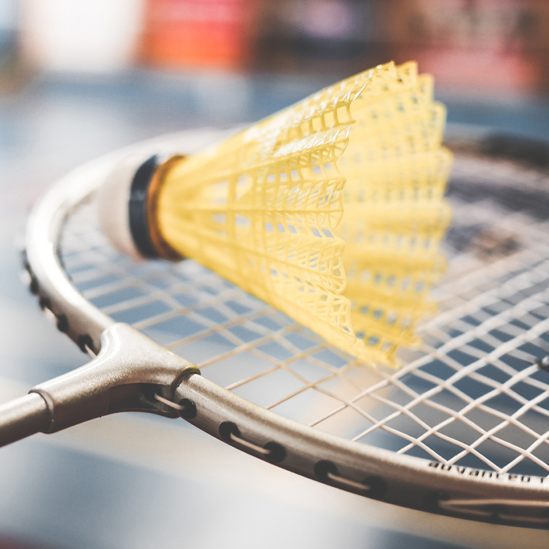

ABOUT ME
Hi. I currently have the name of Edwin Chen, and I’m attending grade.10 at Colonel By Secondary School. I was born in Queensway Carleton Hospital in Ottawa and from my last name, I’m sure that you can discern that I come from Chinese heritage. Being in the pre-ib program, I am expected to learn at an accelerated pace. As such, I have a slightly above average amount of stress compared to the average teenager. Generally, I don’t have much of an issue with my school work and usually, I am capable of attaining fairly decent marks. I’d like to think that I am reasonably responsible and organized with how I deal with work; however, I am very liable to procrastinate on assignments I don’t particularly enjoy doing. As for future aspirations, I plan to attend either UofT, UWaterloo or UBC majoring in Computer Science.
COURSES
| PERIOD | DAY 1 | DAY 2 | DAY 3 | DAY 4 |
|---|---|---|---|---|
| PERIOD 1 | ENG2DE-07 Harris,K. 223 |
CHC2DE-02 Reiche,A. 152 |
FSF2DE-01 Labrie,M. 128 |
MPM2DE-04 Lee,J. PORT6 |
| PERIOD 2 | FSF2DE-01 Labrie,M. 128 |
MPM2DE-04 Lee,J. PORT6 |
ENG2DE-07 Harris,K. 223 |
CHC2DE-02 Reiche,A. 152 |
| PERIOD 3 | BBI2O Hutchinson,B. 160 |
CGF3ME-02 Beard,B. 154 |
SNC2DE-05 Porter,M. 201 |
ICS2O Kutschke,S. 212 |
| PERIOD 1 | SNC2DE-05 Porter,M. 201 |
ICS2O Kutschke,S. 212 |
BBI2O Hutchinson,B. 160 |
CGF3ME-02 Beard,B. 154 |
INTERESTS
As far as my own interests go, I have, for a while, had an interest in programming and its many uses as I see it as my
primary career path. As a result of this interest, I have grown familiar with many applications that utilize programming
such as Unity3D, Processing and GitHub. Through my interest in programming, I have discovered many machine learning
videos displaying an algorithm learning how to play certain games. Upon doing more research, I found that machine
learning was a very math heavy disciple which synergizes well with my interest in math. As a result, I have also developed
a deep interest in machine learning.
Most of the time, I prefer to get my physical exercise through playing badminton. I first started playing in grade 7 and
have been playing it ever since. I was surprised to find that this sport was not simply a game of brute strength, but a
game of immense amount of strategy and calculation. As such, this sport has taught me a valuable lesson which was
that acting out on your frustrations was never a good idea. Although being frustrated may boost your brute strength, it
would significantly hinder your ability to strategize which would ultimately lose you the game.
